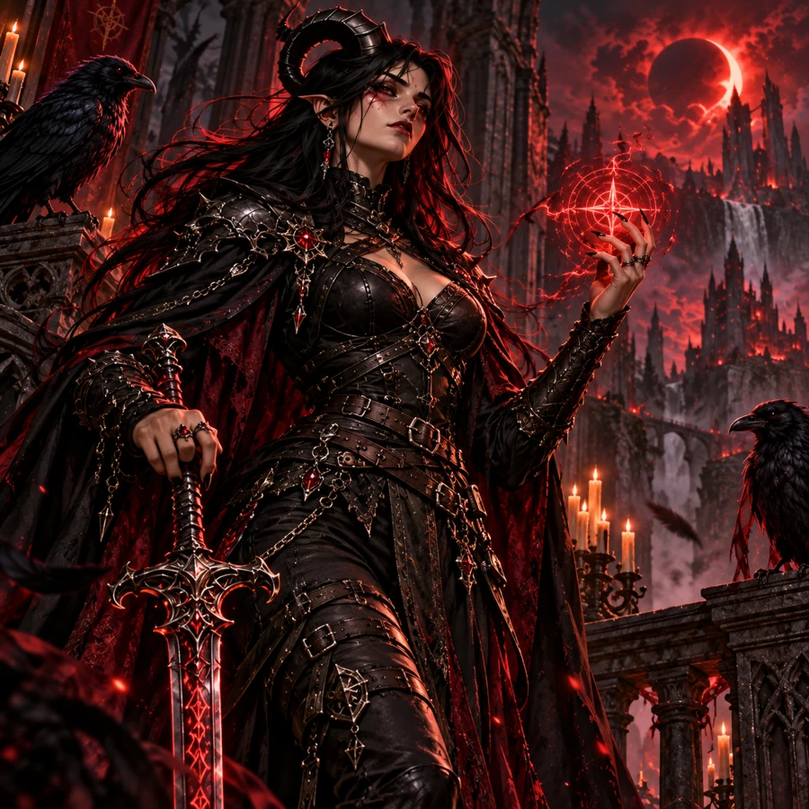

⛧
ARCHIVO DEL PACTO
HOJA PERSONAL
/
D&D 5E · 2014
Local · sin conexión
TIEFLING
✦
BRUJA DEL INFERNAL
✦
NIVEL 05
Val
Draven
⛧
“No soy la heroína de esta historia.
Soy la pesadilla que sigue a los culpables.”
Pacto de la Hoja
Charlatana
Caótica neutral

EL PASADO TAMBIÉN SE LLEVA EN LA PIEL.
01
Ficha principal
02
Lore y personaje
03
Compendio de reglas
04
Simulador de turnos
05
Mesa y recursos
06
Bitácora y respaldos
07
Oficialidad y Homebrew
Estado de mesa por registrar
Administrar recursos ↗
CONFIRMAR CAMBIO
Cancelar
Confirmar
Activa JavaScript para utilizar la hoja interactiva.